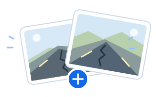

Report a local issue with two photos.
Your location is detected automatically.
Take two clear photos of the same issue from different angles.

Use different angles or sides. Both photos must show the same damage type.
Provide more information about the issue to help our team.
Are you sure you want to delete this content? This action cannot be undone.
Request Admin review to share your report description and submitted photos. Pending and rejected requests are not visible in the Community Feed.
Report evidence